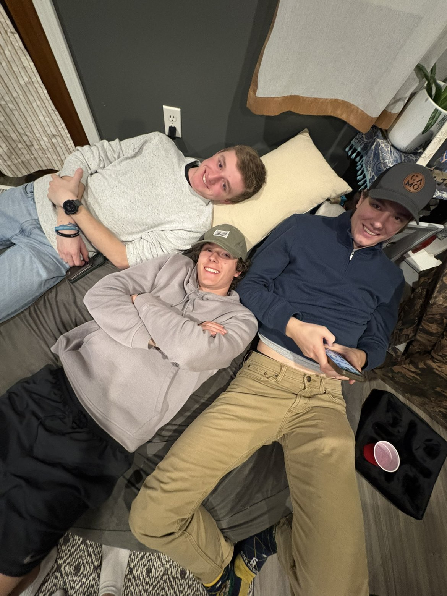

The Challenge
Millions lack access to clean, safe water. Contaminated sources lead to illness, missed school days, and lost productivity. Communities deserve better.


Building sustainable water systems for communities in need
Support a ProjectMillions lack access to clean, safe water. Contaminated sources lead to illness, missed school days, and lost productivity. Communities deserve better.

Children like this spend hours each day collecting water. Water that's often contaminated and causes illness. Instead of going to school, playing, or building a future, they're spending their childhood hauling water.
Every donation helps end this cycle and gives children the chance to be just that—children.

We drill wells and install water systems that provide reliable access to clean water. Each project is built with the community, ensuring long-term sustainability and local ownership.
Our teams work to create lasting change—not just temporary relief.

Your $50 donation funded the materials for our community's well. Today, 200 families have clean water. My children haven't been sick since installation.
I was skeptical about donating, but seeing exactly where my $100 went changed everything. The water system in this village is transforming lives every single day.
Before the well, girls missed school 30% of the time gathering water. With your support, attendance increased to 95%. Education is now possible for our children.
$200 doesn't seem like much, but it covered the drilling costs that connected 50 families to clean water. My business improved because I'm no longer spending time on water collection.
I've tracked my $500 donation from payment to project completion. The transparency is incredible. A functioning well now serves this entire region for years to come.
We saw the need. We chose to act. Together with hundreds of donors, we've funded 47 water projects across three countries. Water that will change lives for generations to come.

In 2023, a new well transformed the village of Kijiji. Maria's children returned to school and the local clinic reported a 70% drop in waterborne illnesses. With reliable water nearby, families spend time on education and work—not fetching unsafe water.
Your support funded the well, training, and local maintenance that made this possible.
Your donation funds wells, maintenance, and community training. Even a small gift makes a measurable difference.
Donate Now